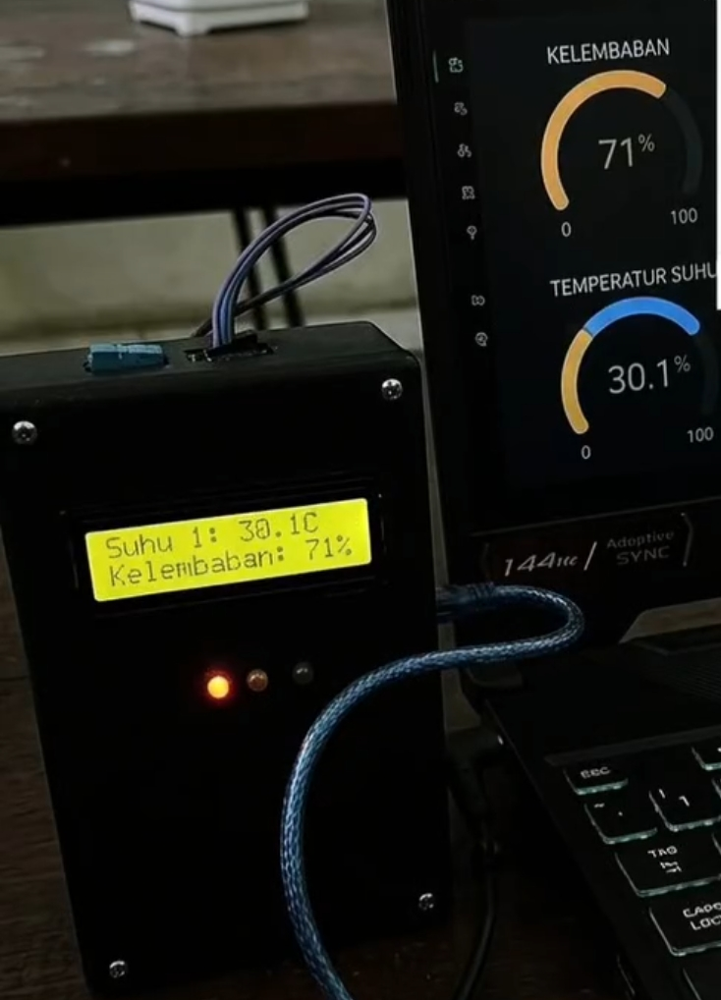

Transforming Electro-Mechanical Concepts into Reality.
From embedded system firmware and electronic design to precision 3D mechanical modeling and dynamic IoT interfaces, we engineer intelligent automation solutions.
From embedded system firmware and electronic design to precision 3D mechanical modeling and dynamic IoT interfaces, we engineer intelligent automation solutions.
Empat pilar utama pengembangan dan rekayasa teknologi di laboratorium kami.
Pengembangan arsitektur kode C/C++ mikrokontroler yang efisien dan non-blocking.
Instrumentasi sirkuit, pengondisian sinyal sensor analog, dan manajemen regulasi daya.
Pemodelan sasis mekanis presisi tinggi skala milimeter menggunakan Autodesk Inventor.
Integrasi data real-time pada display LCD fisik serta pemantauan cloud jarak jauh.
Filter arsip berdasarkan pilar kompetensi untuk meninjau dokumentasi teknis laboratorium kami.

Sistem instrumentasi deteksi kontaminasi air pada bensin berbasis sensor TDS dan mikrokontroler. Dirancang dengan manajemen display terintegrasi guna memantau kualitas kemurnian bahan bakar secara langsung.
Secure Technical Review:

Sistem pemantauan kualitas udara box akrilik bening. Mengintegrasikan sensor gas MQ, DHT, serta exhaust fan kontroler mekanis untuk sirkulasi dan kalkulasi status kebersihan udara secara real-time.
Secure Technical Review:
Sistem stasiun cuaca portabel boks hitam dengan sinkronisasi nirkabel Blynk IoT dashboard. Menampilkan parameter kelembapan dan temperatur secara live pada LCD fisik maupun widget lingkaran PC.
Secure Technical Review:
Detailed secure documentation for H DEC LAB exhibition file.